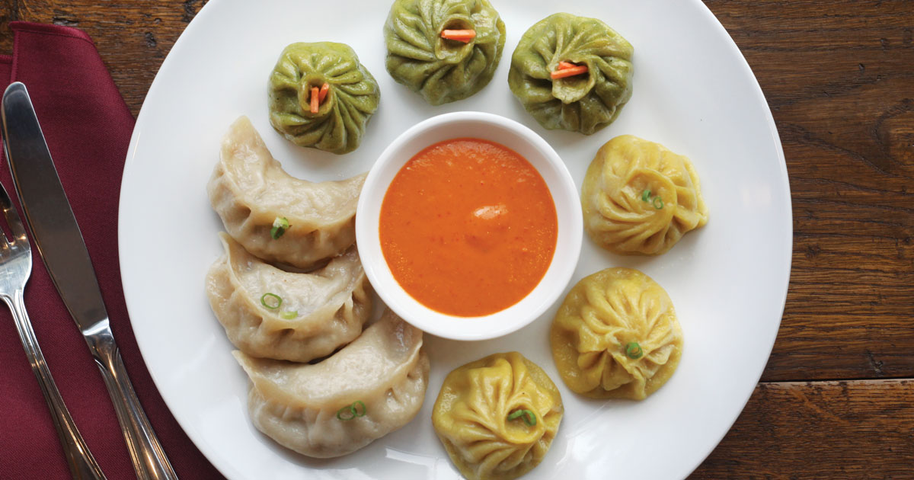

Beef Momo

Description
When making momos there are three main things to keep in mind. First the dough, then the filling, and then the last step is the steaming. Of course, making the momo skin and shaping the momo is also a skill that needs some practice. As little kids, we would all be given a piece of dough and we would practice shaping momos again and again in the kitchen. This actually is a great way to keep the kids occupied with a piece of dough while the adults actually make the real momos.
Momos come in many different shapes, cooking styles and of course everyone has their own version of the inside filling. Here I choose to share how we make the basic steamed sha-momo in our home. With momos, we like to have a side of Labu Dangtsel and homemade hot tomato salsa.
Ingredients
- 4 cups of flour
- 1 to 1.5 cup of water
- 1 lb of minced beef
- 1 small onion (chopped)
- 2 stalk green onion
- 1 Tablespoon of cooking oil
- 2 Tablespoon of soya sauce
- 1/4 cup of water
- salt and pepper to taste
Steps
- Make dough and knead it until it is firm yet supple.
- In a bowl large enough, add the meat, chopped veggies and the rest of ingredients to make our momo filling, and mix it thoroughly.
- Divide the dough into small balls, and then flatten each ball using a roling pin to shape them into roughly 3" flat rounded. This is your momo 'skin'.
- Take a 'momo skin', place a spoonful of momo stuffing on that, and close it up.
- Oil your steamer tray, and line up momos in the tray close enough but not touching each other.
- Boil water in the steamer bottom and once it boils, stack up the momo trays.
- Let it steam for about 15 mins, and then you're ready to feast!